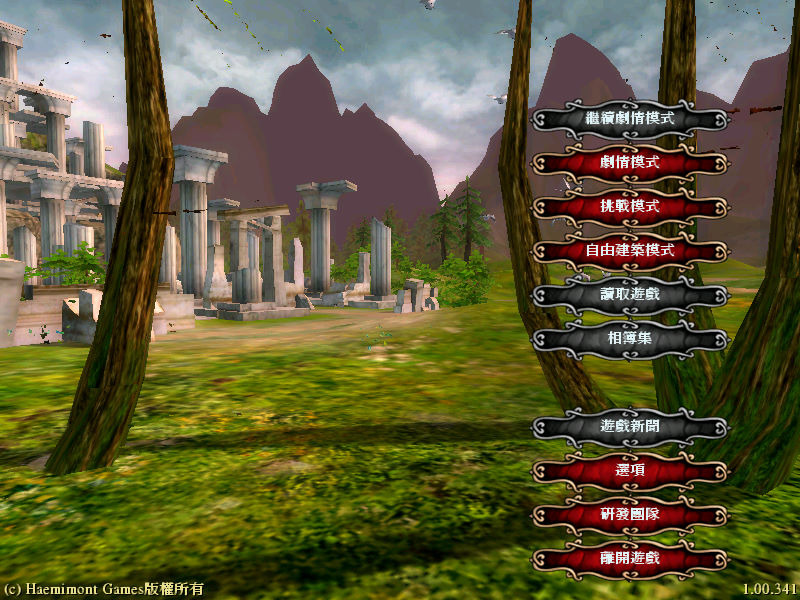
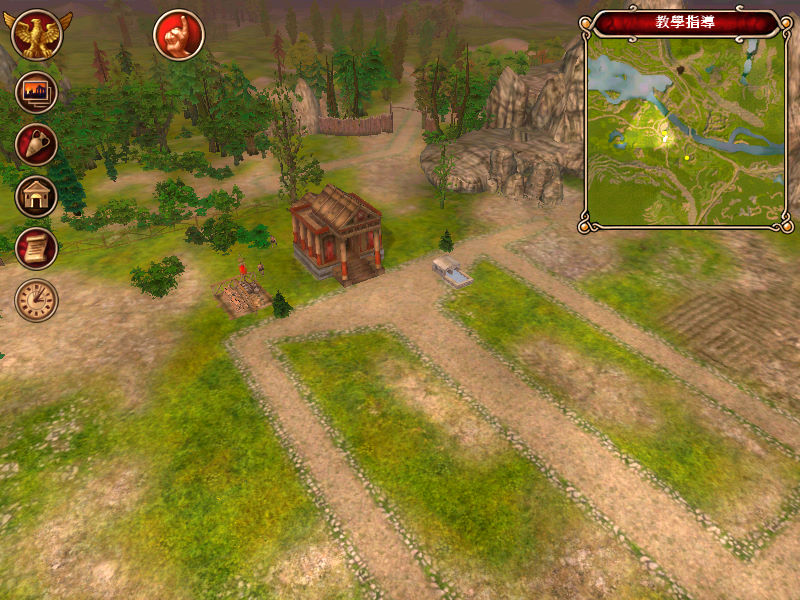

名稱：羅馬的榮耀／羅馬帝國的榮耀 (Glory of the Roman Empire，中文版)
簡介：Haemimont 2006年出品的城鎮建造模擬遊戲，由CDV代理發行，台灣由光譜中文化並代
理發行 [待補]。


保護：繁中版為光碟SecuROM 7.29，英文版為光碟Tages 5.5
檔案：nocd100.rar = 1.00免光碟檔
nocd101.rar = 1.01免光碟檔（已含1.01更新內容）